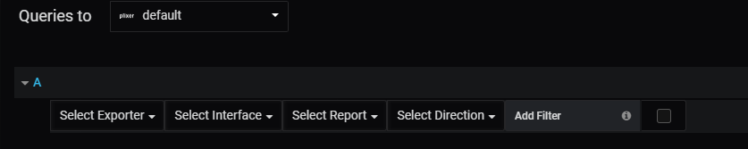
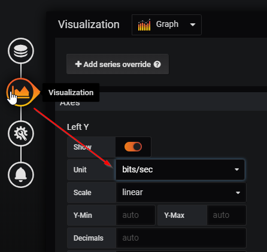

Runnings Reports¶
Reporting is done primarily through populating the drop down menus.
The report will only rendor once you have selected something from each drop down or you have selected to add a filter.
The data is going to be represented in bits / second. You will want to make sure Grafana is displaying it this way by updating the visualization field
